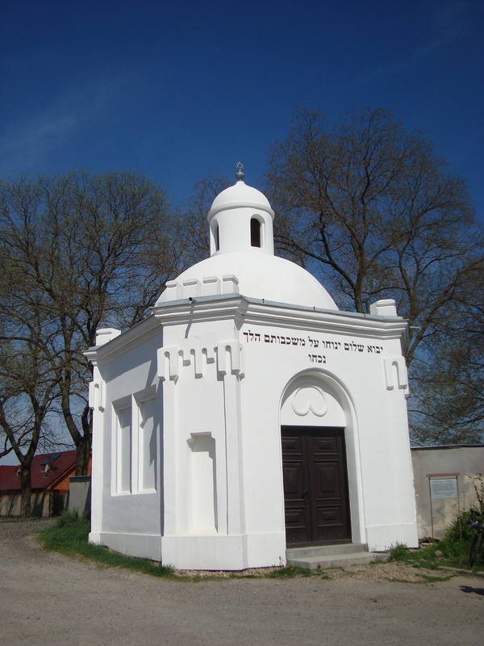
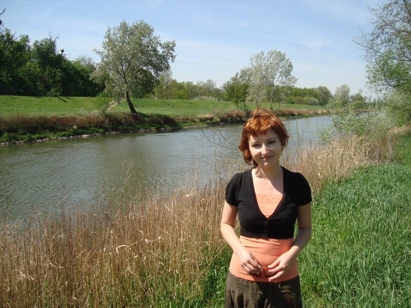
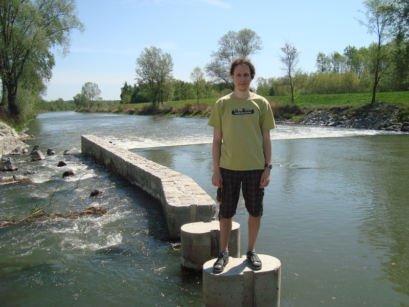
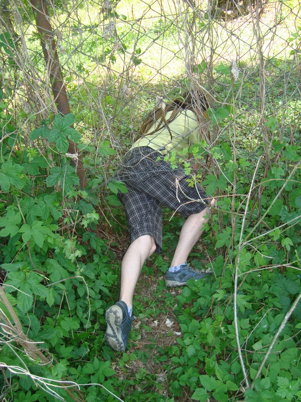
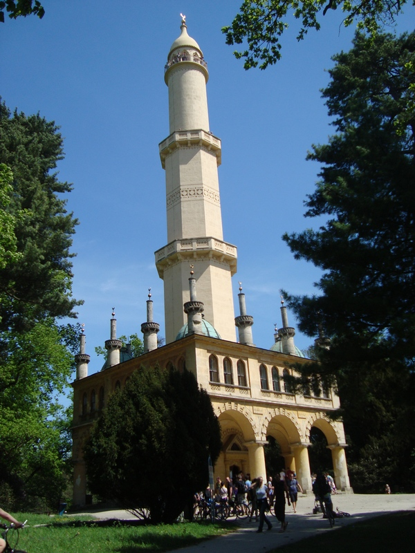
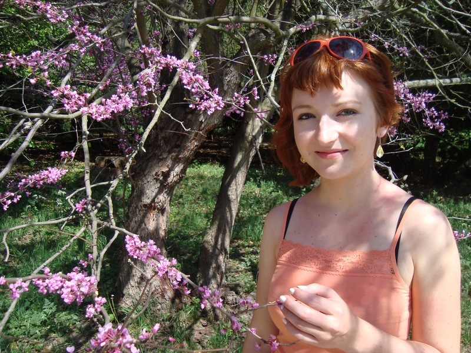
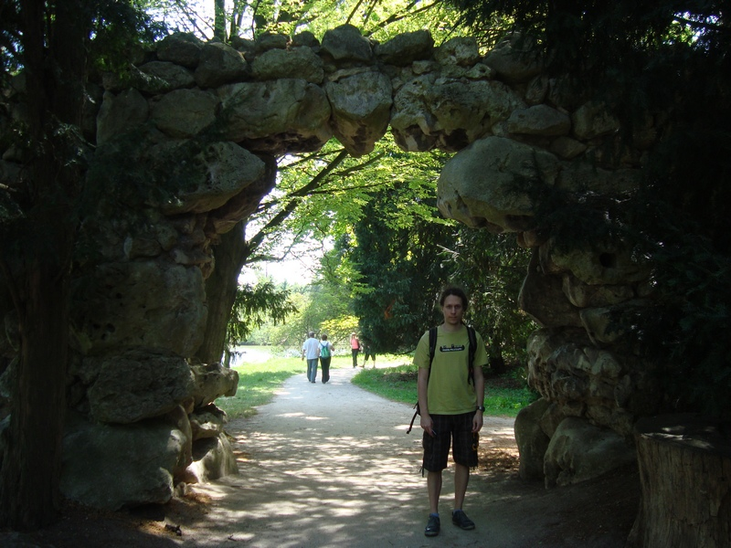
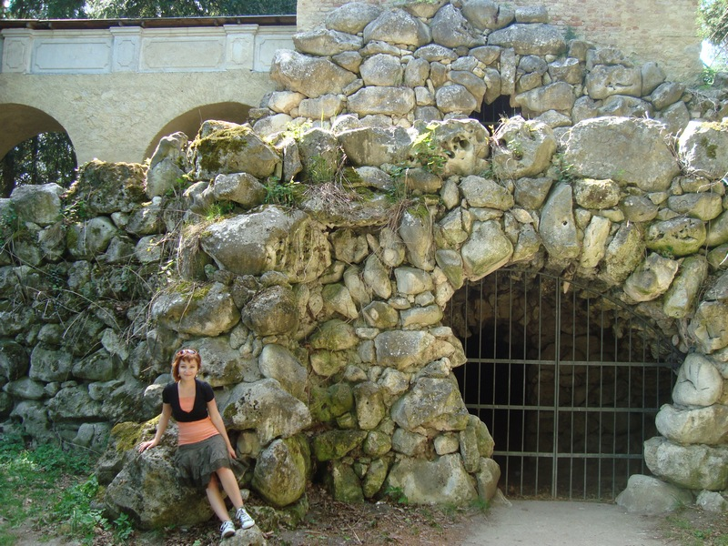
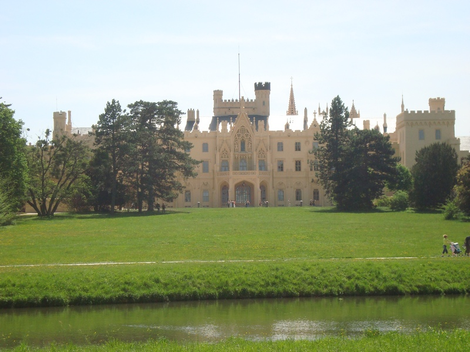
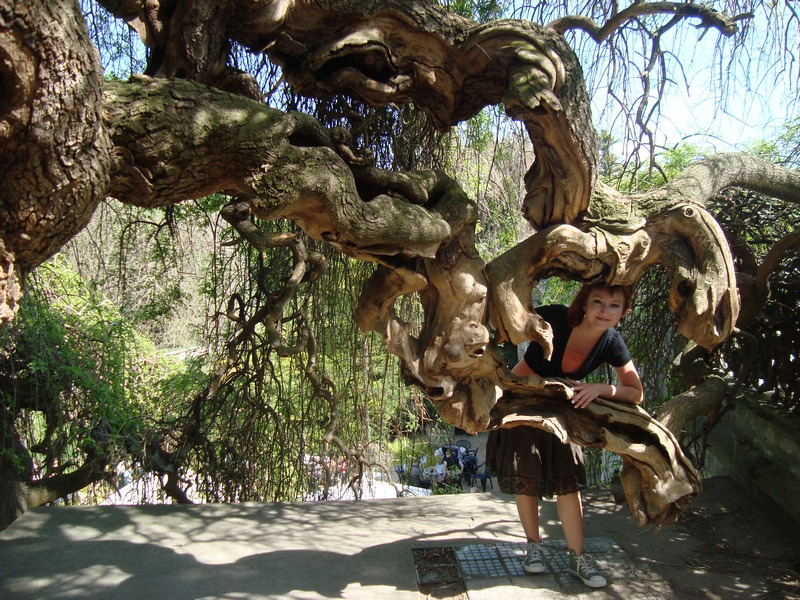

Po dlouhé době den plný lenošení :-). Už to bylo potřeba, cítím se tak vyčerpaná, že jsem ani nebyla schopná doplazit se dnes někam na oběd. Válím se v peřinách a přemýšlím, co všechno jsem v posledních týdnech a měsících zanedbávala a těším se, jak si to teď všechno vynahradím. A samozřejmě postupně zkusím dohnat všechny blogové resty, které se mi tu nakupily. Abych jen tak planě nekecala, začnu radši hned teď :-).
Někdy v průběhu dubna jsme se s Péťou rozhodli využít krásného počasí a necvaknutých lístků na vlak, co nám zbyly z podzimní výpravy na burčákové slavnosti, a vypravit se na výlet do Lednice. Měli jsme v plánu dopravit se vlakem do Podivína a odsud pak pěšky až do Lednice. Kuriozní bylo, že jsme v Podivíně na nádraží při dokupování zón ke zpátečním lístkům zjistili, že ty naše z podzimu už jsou asi měsíc neplatné. Průvodčí si toho nevšimnul, ale nechtěli jsme riskovat a radši jsme si tedy koupili lístky nové. (A dobře jsme udělali, protože při zpáteční cestě jsme narazili na revizorku. To se mně osobně ještě nikdy ve vlaku nestalo a ani jsem nevěděla, že něco jako vlakoví revizoři vůbec existuje :O…)

Židovský hřbitov v Podivíně
Naší první zastávkou byl podivínský židovský hřbitov, kde na nás čekala první keška :-). V rámci hledání otevřeného obchodu jsme narazili na trafiku, kde jsme si nakoupili pití a poptali se místního nabušeného prodavače na cestu :D. Moc nás nepotěšilo, že prakticky celou dobu až do Lednice budeme muset jít po úzké silnici (která byla mimochodem v mapě vyznačená jako cyklostezka!), kde si to řidiči nepříjemně hasili. Poté, co jsme se neúspěšně pokoušeli někoho si stopnout, se nám nakonec podařilo uhnout z cesty kamsi do pole a pokračovali jsme k Lednici po břehu Dyje.

Na břehu Dyje
U řeky bylo tak krásně, že jsme si tam udělali na chvíli pauzu na pár fotek. To už se mezitím objevila mezi stromy věžička lednického minaretu, což nás nakoplo k pokračování v cestě, protože do parku už to bylo opravdu coby kamenem.

U řeky
K parku jsme přicházeli ze zadní strany a dle rady bouchače z trafiky jsme se pokusili najít nějakou díru v plotě, kterou bychom se mohli protáhnout do areálu a nemuseli tak celý park obcházet dokola. Poštěstilo se nám hned zkraje… to jsme ovšem ještě netušili, že jen o kousek dál je otevřená branka :DD…

Netradiční vstup do parku :D
Po dvou či po čtyřech - dostali jsme se dovnitř parku a naše první kroky vedly k minaretku (a zmrzlině :D).

Minaret
Protože bylo ten den opravdu horko, výstup nahoru jsme si protentokrát odpustili a rozhodli se radši kochat krásným rozkvetlým parkem.

Květena v parku

Kešce na stopě

U viaduktu
Nakonec nás cesta dovedla až k lednickému zámku, který je krásně opravený a je opravdovou dominantou celého areálu. Teď na jaře, když jsou všechny záhony rozkvetlé, je to mimořádně hezká podívaná. Pokud se vám navíc poštěstí, možná před zámkem potkáte sovu, která na vás bude šibalsky pomrkávat, jako se to stalo nám (no fakt :D!).

Lednický zámek
Při procházce parkem nám docela vyhládlo, takže další zastávku jsme si udělali velmi záhy, přičemž nám milou společnost dělali guláš a smažák :-). Nacpaní k prasknutí jsme se nakonec odkutáleli zpátky do parku, roztáhli si deku a předčítali si Vandr s Reflexem a slunili se, až dokud nebyl čas jít na autobus.

Popletený strom
Lednicko-valtický areál je opravdu báječným místem pro víkendový výlet, zvlášť pokud přeje počasí. Lednický park je tak obrovský, že ani za celý den jsme si ho nestihli celý projít, ale aspoň máme o důvod víc, proč se tam zase někdy zajet podívat :-).


Poslední dobou potkávám revizory ve vlaku do Prahy dost často. Není mi úplně jasná jejich f-ce, ale osobně si myslím, že je to spíš taková kontrola průvodčích. Protože proč by cvakali nadvakrát lístky cestujícím, tomu fakt nerozumím.